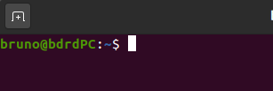

SYSTEME D’EXPLOITATION¶
Quel est le rôle d’un système d’exploitation?¶
Visionner la vidéo de la cellule suivante (exécuter la cellule si besoin) ou suivre le lien https://www.youtube.com/watch?v=4OhUDAtmAUo.
from IPython.display import YouTubeVideo
YouTubeVideo('4OhUDAtmAUo', width=800, height=450)
Le système d’exploitation permet:
l’exécution des applications;
le partage des ressources entre les utilisateurs, les programmes;
la gestion:
des périphériques;
des fichiers;
des erreurs;
des performances.
Les différents types de système d’exploitation¶
On distingue deux grandes familles de système d’exploitation:
les dérivés d’UNIX (GNU/Linux, BSD, iOS, MacOS, Android, etc.);
les systèmes Microsoft Windows.
Certains sont libres (c-à-d ne nécessitant pas le paiement d’une licence d’utilisation, code source disponible, entre autres), d’autres non (on les qualifie de systèmes propriétaires).
Conformément au programme, on utilisera un système d’exploitation libre en NSI: GNU/Linux. En plus du noyau Linux et pour plus de convivialité on utilisera l’environnement graphique Gnome de la distribution Ubuntu.
L’interaction avec le système d’exploitation peut se faire de deux manières:
par le biais d’une interface graphique (GUI: Graphical User Interface);
par le biais d’une interface en ligne de commande (CLI: Command Line Interface).
On privilégiera dans un premier temps l’utilisation de la ligne de commande.
Découvrir la ligne de commande¶
L’interpréteur Bash ou shell Bash¶
On a accès à la ligne de commande en ouvrant un terminal (à partir de l’accueil Ubuntu, rechercher ‘terminal’ si l’icône de lancement est absente).
Il s’agit d’un programme appelé Bash qui est présent par défaut sur la majorité des sytèmes UNIX.
Les commandes de base¶
Une fois le terminal démarré, chaque utilisateur se trouve par défaut dans son dossier personnel (en anglais home directory) et le shell Bash est en attente de commande en affichant une série d’informations: nom_utilisateur@nom_machine:~$

Le caractère ~ (prononcez tilde, touche Alt Gr 2) correspond au chemin du répertoire personnel de l’utilisateur. Le caractère $ signifie que l’on a affaire à un utilisateur normal c-à-d avec des droits limités.
Toutes les commandes acceptent de nombreuses options. Pour avoir un inventaire complet des options on doit taper: man xxx où xxx est la commande.
Commande |
Description |
|---|---|
ls |
lister le contenu du dossier courant |
mkdir |
créer un dossier |
cd |
se déplacer dans un dossier |
cp |
copier des fichiers ou dossiers |
rm |
supprimer des fichiers ou dossiers |
cat |
afficher le contenu d’un fichier |
touch |
crée un fichier vide |
clear |
efface l’écran |
Travail
Créer un dossier personnel dont le nom respectera le format 1ere lettre du prénom suivi du nom. Se rendre dans ce dossier. Par exemple, l’élève fictif Damien Payet tapera:
mkdir ~/dpayet
cd ~/dpayet
Créer un fichier vide nommé
commandes.txt:
touch commandes.txt
Lister le contenu du dossier. On utilisera une option
-lavec la commandels, pour avoir une sortie plus détaillée.
ls -l
Effacer l’écran.
Aborescence d’un système Linux¶
Les dossiers du systèmes sont organisés selon une arborescence dont la racine est /.

Un utilisateur normal n’a pas les droits suffisants pour écrire dans les dossiers systèmes ou y effacer des fichiers. Seul le superutilisateur nommé root peut tout faire (et même détruire le système) et n’importe où !
Les changements de dossier se font naturellement avec la commande cd qui peut prendre comme paramètre:
un chemin absolu, c-à-d complètement qualifié depuis racine
/(par exemple/home/bruno/Documents);un chemin relatif, c-à-d par rapport au dossier où on se trouve qui est noté avec le raccourci
.(point); le dossier parent est noté avec le raccourci..(point point). Ainsi, si on est dans/home/bruno/Documentset qu’on veut se rendre dans/home/bruno/Téléchargementson tapera:
cd ../Téléchargements
Travail
Lister le contenu du dossier de superutilisateur,
/root. Commentaire.Combien d’utilisateur possède un compte sur la machine ? Coup de pouce: les dossiers utilisateur se trouvent dans
/home.D’après la capture d’écran ci-dessus, quelle commande permet de se déplacer dans
Periode1-2?
Gestion des droits¶
Qui peut faire quoi et où ? Pour répondre à cette question, les environnements UNIX divisent le monde en trois parties:
le propriétaire ou utilisateur (user);
le groupe (group);
les autres (others).
Par ailleurs, les fichiers peuvent être manipulés en:
lecture (read);
écriture (write);
exécution (execute).
Considérons la sortie de la commande ls -l sur un répertoire donné.
Trois colonnes sont utiles à la gestion des droits: 1, 3 et 4. La colonne 3 indique le propriétaire et la colonne 4 le groupe.
La colonne 1 qui contient 10 caractères doit être décomposé en quatre parties. Par exemple:
- rwx r– r–
Attention il n’y a pas d’espaces en réalité, ils ont été rajoutés pour une meilleure lisibilité !
le 1er caractère: un
-correspond à un fichier et undà un répertoire;un groupe de 3 caractères associés aux droits du propriétaire;
un groupe de 3 caractères associés aux droits du groupe;
un groupe de 3 caractères associés aux droits des autres;
Ainsi, dans l’exemple précédent pajaniaye.odt est un fichier dont le propriétaire est nobody qui dispose des droits en lecture et écriture de même que le groupe 4294967294. Les autres n’ont que le droit en lecture.
Remarque: un x pour un fichier signifie droit d’exécution et droit de traverser pour un répertoire.
Pour exécuter un fichier nommé app.sh par exemple et situé dans le répertoire courant, on entre la commande ./app.sh.
Enfin, seuls le propriétaire ou root peuvent changer les droits sur un fichier ou répertoire. La commande chmod est prévue à cet effet. Voir syntaxe dans le tableau suivant.
Accorder les droits de: |
Syntaxe |
|---|---|
lecture au groupe |
chmod g+r fichier |
écriture au propriétaire |
chmod u+w fichier |
exécution aux autres |
chmod o+x fichier |
exécution à tous |
chmod ugo+r fichier |
Remarque: pour supprimer un droit, on utilise le signe -; par exemple, pour supprimer le droit d’écriture au groupe sur un fichier, on utilisera la commande:
chmod g-w fichier